Terapad でプログラミング
1章でインストールが終わっていれば、
デスクトップにTerapad というアイコンがあるはずです。

これをクリックしてTerapadを起動しましょう。
ファイルを保存する
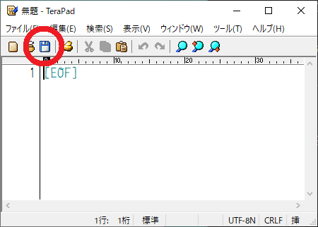
画像の赤まるで囲ったフロッピーディスクのアイコンをクリックすると保存できます。
一応念のために行っておくとフロッピーディスクというのはこういうものです。
容量は1.44MBです。まあなかなか見る機会はないでしょう。
フロッピーディスクのアイコンをクリックするとこのような画面が出るので
紫のところをポチポチして先ほど作成した3.program/golangのフォルダに行きます。
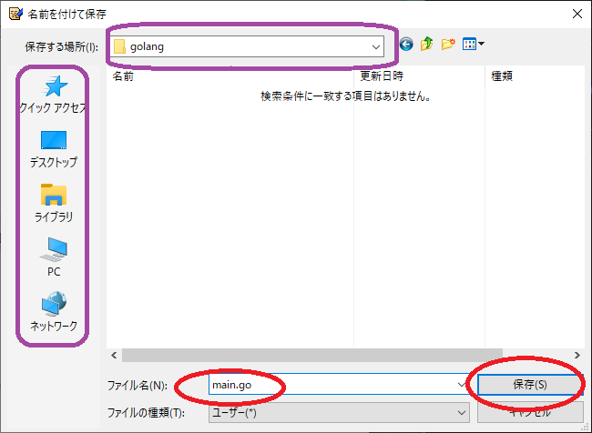
たどり着けたら赤まるのようにmain.goと入力して保存します。
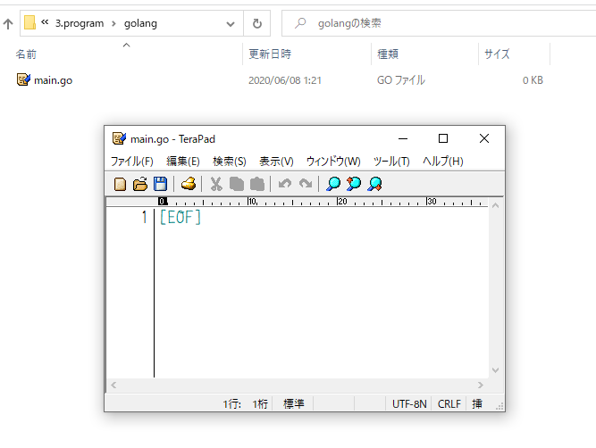
空のファイルが3.program/golang/main.goとして保存されました。
コーディング
単にプログラムを書くことをコーディング(coding)といいます。 プログラミング(programing)とほぼ同じ意味ですが、 プログラミングはアルゴリズム等を考える作業も含みます。 コーディングは単に記述することだけを指すことが多いです。

package main
import (
"fmt"
)
func main() {
fmt.Println("Hello world!")
}
これをTerapadに入力して保存してください。
入力が間違ってなければ3.program/golang/main.goにハローワールドのプログラムが保存されました。
初めてなので一応難しい方法をやっておきます。
これは難しいかもしれないので、一応なぞりつつ、うまくいかなかったらやらなくてもいいです。
重要なところではないので、つまずいて時間を割いてはもったいないです。
うまくいかないなあというときは眺めるだけにしておきましょう。
雰囲気だけ見ていてください。
あくまで今からやるのは難しい方法なので、その後簡単な方法を書きます。
コンパイル
1. 場所を知る
まず3.program/golang/がどこにあるのかを知りたいです。
今までエクスプローラーで開いていたフォルダの上部分のアドレスバーをクリックしてください。
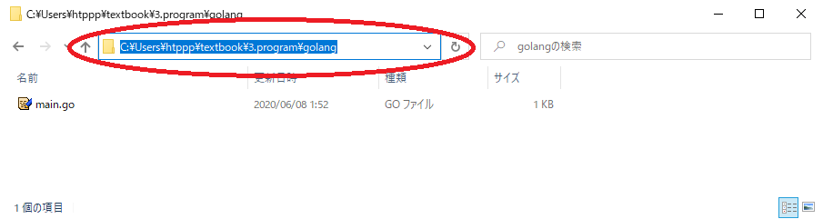
クリックすると選択状態になると思います。この状態でCtrl+Cを押してコピーしてください。
コピーできましたか？
私の場合C:\Users\htppp\textbook\3.program\golangでした。
2. コマンドプロンプトを立ち上げる
次に、コマンドプロンプトというのを起動します。
おもむろにwindowsキーとRを同時押ししてください。
そして出たウィンドウにcmdと入力してください。
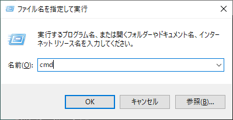
入力してエンターを押すと黒い画面が出ます。
この黒い画面はコマンドプロンプトと呼ばれます。覚えてください。
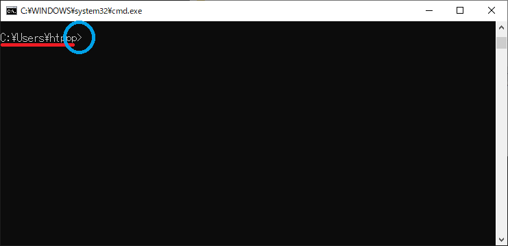
この画面を簡単に解説します。
C:\Users\htppp>
コマンドプロンプトにはこのように出ています。
C:\Users\htppp>の最後に>があります。これはプロンプトと言います。
プロンプトはパソコンが今あなたの入力を待っていますよということを表しています。
つまりパソコンは待機していることを表しています。
プロンプトの前の文字列C:\Users\htpppは今いる場所を表しています。
つまりC:\Users\htppp>は、今C:\Users\htpppにいて、あなたの入力を待っていますよ、という意味になります。
3. 場所を移動する
この状態でcdと入力し、その後1つ半角空白を入れます。
その後黒い画面を右クリックしてください。
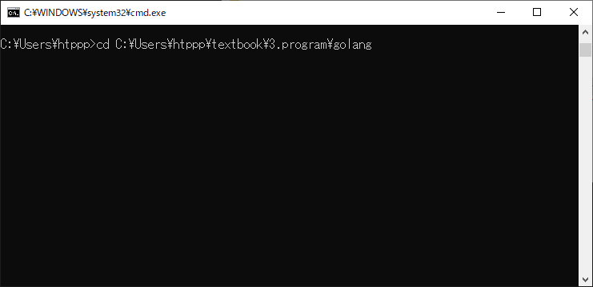
このような感じになりましたか？
コマンドプロンプトで右クリックは貼り付けを意味するので、
先ほどコピーした3.program/golang/のフォルダの場所が貼り付けられました。
これでcd 場所のようになったはずです。
cd というのはchange directoryの略でdirectoryはフォルダのことです。
cd 場所 は、そこに行きたいよという意味になります。
私の場合cd C:\Users\htppp\textbook\3.program\golangとなりました。
これでパソコンにC:\Users\htppp\textbook\3.program\golangに行きたいよと伝えることができます。
この状態でEnterを押しましょう。
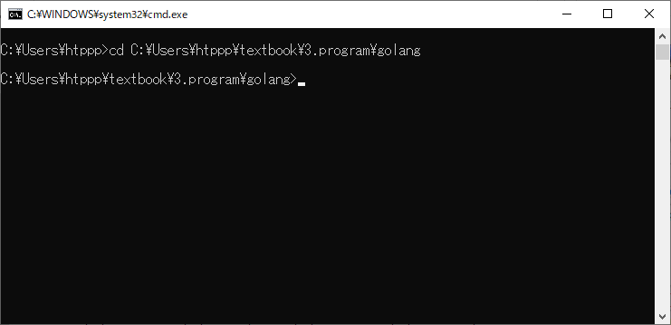
こんなふうになりました。
プロンプトの前がC:\Users\htppp\textbook\3.program\golangとなってますね。
プロンプトの前は現在の位置を表しているので、正しく移動できたことがわかります。
4. コンパイル
ここでようやくコンパイルします。
この状態でgo build -o hello_world.exeと入力してEnterを押すと、
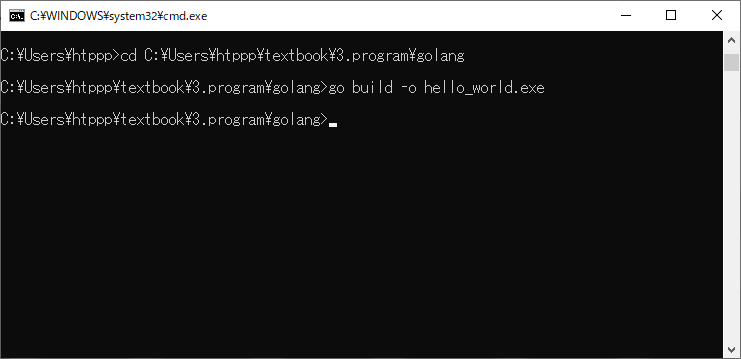
こうなりました。
この時、元のフォルダを見てみると、main.go のほかにhello_world.exeができています。
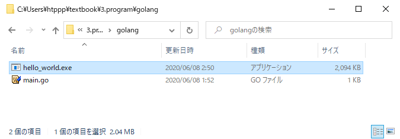
このexeファイルが実行ファイルです。
先ほど書いたmain.goがコンパイルされてhello_world.exeができたのです。
5. 実行
一応クリックしても何も起きません。
コマンドプロンプトに戻り、hello_world.exeと入力してエンターを押します。
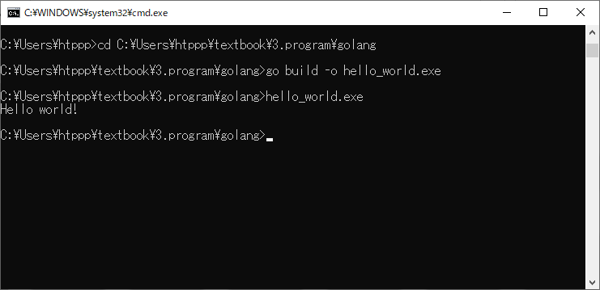
するとこのように表示されました。
C:\Users\htppp>cd C:\Users\htppp\textbook\3.program\golang
C:\Users\htppp\textbook\3.program\golang>go build -o hello_world.exe
C:\Users\htppp\textbook\3.program\golang>hello_world.exe
Hello world!
C:\Users\htppp\textbook\3.program\golang>
見えますでしょうか。
hello_world.exeと入力した次の行に、Hello world!と表示されています。
これでハローワールドが成功しました。\('ω')/